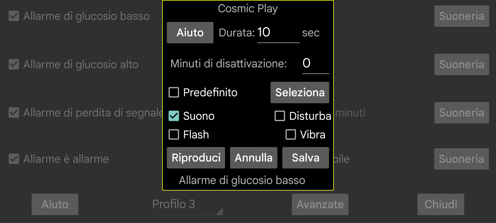

Seleziona quale suoneria riprodurre per un allarme o una notifica e per quanti secondi.
Minuti disattivata: Se un livello di glucosio basso o alto persiste, l'allarme non scatterà nuovamente in modo immediato. Puoi specificare dopo quanti minuti l'allarme dovrebbe essere generato nuovamente se la condizione persiste.
Suono: emetti un suono.
Default: usa il suono predefinito.
Seleziona: Seleziona una suoneria. Su alcuni telefoni Samsung l'app preinstallata di selezione delle suonerie va in crash, quindi devi installare una diversa app per le suonerie utilizzabile da altre app, ad esempio: https://play.google.com/store/apps/details?id=com.centralparkapps.ringo.ringtones o https://apkcombo.com/ringtone-picker/de.kumpewo.ringtones
Vibra: Vibra
Disturba: Se "Non disturbare" è attivo, disattivalo prima di riprodurre un allarme. Se Juggluco non ha il permesso necessario per questo, sarai indirizzato a una schermata delle impostazioni Android per concedere a Juggluco questo permesso. Attivando "Non disturbare" e premendo Play, puoi testare se gli allarmi funzioneranno durante "Non disturbare". Nelle versioni precedenti di Juggluco, "Non disturbare" veniva riattivato dopo l'allarme. Nella versione attuale non lo è, perché ciò aveva l'effetto indesiderato che quando un allarme scattava durante un periodo automatico "Non disturbare", questo stato non veniva disattivato automaticamente. Se non vuoi sentire gli allarmi durante "Non disturbare", probabilmente devi anche deselezionare "Allarme è allarme" nella schermata precedente.
Flash: Gli smartphone con un flash/torcia possono anche lampeggiare per lo stesso numero di secondi. Utile quando le suonerie non sono consentite (ad esempio nelle aule scolastiche) e le regole non coprono specificamente le luci lampeggianti.